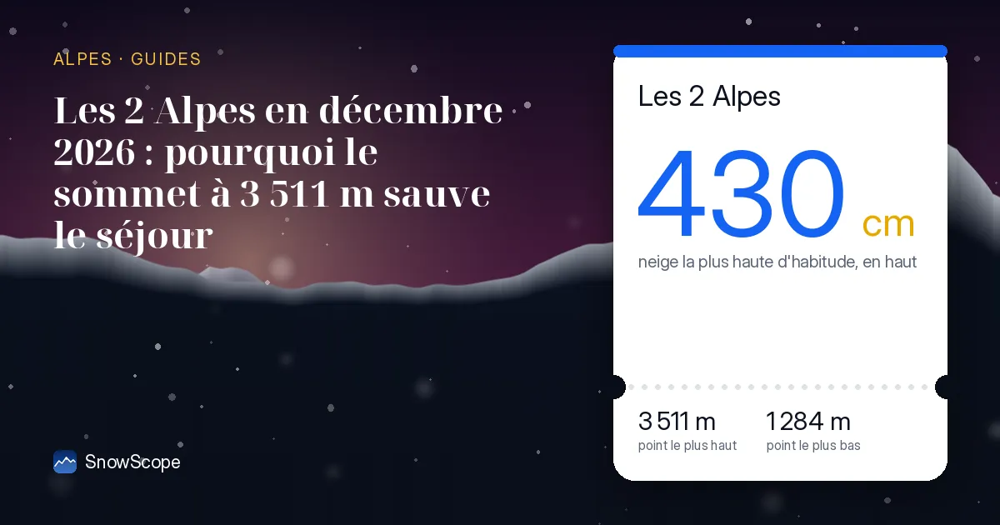

Les 2 Alpes en décembre 2026 : pourquoi le sommet à 3 511 m sauve le séjour
Quand on compte chaque euro pour un séjour au ski, il faut savoir où se trouve vraiment la neige en décembre. Les 2 Alpes atteint un point culminant de 3 511 m, ce qui change tout quand le bas des remontées à 1 284 m reste peu enneigé.
Consultez les prévisions neige en temps réel pour Les 2 Alpes sur l'application SnowScopeHauteurs de neige, alertes poudreuse et carte 3D, gratuitement.
Pourquoi l'altitude du sommet change le mois de décembre ici
Le domaine skiable compte 108 km de pistes et 46 remontées mécaniques qui couvrent un dénivelé important de 2 227 m. Au bas des remontées à 1 284 m, notre historique de neige des 46 hivers passés montre une hauteur habituelle en décembre de seulement 16 cm. Le 15 décembre, la hauteur habituelle en bas est de 14 cm.
Montez plus haut sur la montagne et l'histoire change complètement. À mi-montagne à 2 397 m, la hauteur habituelle en décembre est de 75 cm. Au sommet des remontées à 3 511 m, la hauteur habituelle en décembre atteint 176 cm, avec une hauteur habituelle au 15 décembre de 160 cm.

Les probabilités de décembre semaine par semaine
Si vous prévoyez de skier au début du mois, vous devez surveiller les chiffres de près. À mi-montagne, la part d'hivers avec 30 cm ou plus est de 76 % du 1er au 7 décembre, et monte à 89 % du 8 au 14 décembre. Pour la semaine du 15 au 21 décembre, cette part atteint 98 %.
Au sommet des remontées, la neige est très garantie, même tôt dans la saison. La part d'hivers avec 30 cm ou plus au sommet est de 98 % la première semaine de décembre, et atteint 100 % pour le reste du mois. Si vous voulez de la neige profonde, un mois de décembre peu enneigé affiche 30 cm à mi-montagne et 72 cm au sommet, tandis qu'un décembre très enneigé apporte 140 cm à mi-montagne et 302 cm au sommet.
Le prix du forfait et l'offre du week-end d'ouverture
Skier avec un budget serré signifie regarder les prix officiels des billets avant de partir. Un forfait Grand Domaine adulte de 6 jours pour l'hiver 2026-27 coûte 266,50 EUR. Si vous voulez juste une seule journée, le billet Freedom à date flexible pour un forfait Grand Domaine adulte d'un jour coûte 68,00 EUR.
Pour ceux qui veulent skier dès le début de la saison, le week-end d'ouverture les 28 et 29 novembre 2026 propose un forfait adulte à 42 EUR par jour. Actuellement, les chiffres de neige indiquent 0 cm en bas, 2 cm à mi-montagne et 72 cm au sommet. Les prévisions de neige fraîche sur deux semaines pour la mi-montagne et au-dessus donnent une moyenne de 94 cm avec une fourchette de 75 cm à 112 cm.
Alpe d'Huez juste à côté, comparaison des chiffres
Il est utile de comparer Les 2 Alpes avec Alpe d'Huez, la station voisine, pour voir où va votre argent. Alpe d'Huez possède un domaine skiable de 163 km de pistes et 82 remontées mécaniques, allant de la remontée la plus basse à 1 124 m jusqu'à la plus haute à 3 306 m.
Au pied de Alpe d'Huez, la hauteur habituelle en décembre est de 14 cm, très similaire à celle de Les 2 Alpes. À mi-montagne à 2 215 m, la hauteur habituelle en décembre est de 60 cm, ce qui est inférieur aux 75 cm trouvés à mi-montagne aux Les 2 Alpes. Au sommet de Alpe d'Huez à 3 306 m, la hauteur habituelle en décembre est de 159 cm. Pour les forfaits, un forfait adulte 6 jours à Alpe d'Huez coûte 336,50 EUR, ce qui rend le forfait 6 jours aux Les 2 Alpes moins cher.
Vue d'ensemble : hivers anciens vs hivers récents
En examinant la stabilité de l'enneigement à long terme, notre historique de neige compare les 15 premiers hivers de 1980-81 à 1994-95 avec les 15 derniers hivers de 2011-12 à 2025-26. À mi-montagne, la moyenne de décembre était de 63 cm lors des 15 premiers hivers, et est passée à 77 cm lors des 15 derniers hivers.
Au sommet des remontées, la moyenne de décembre était de 147 cm lors des 15 premiers hivers, et a augmenté pour atteindre 188 cm lors des 15 derniers hivers. Même si le bas reste peu enneigé avec une hauteur habituelle de 16 cm, les chiffres du haut de la montagne prouvent que les séjours de décembre ici restent fiables si vous restez sur les remontées les plus hautes.
Conseils aux skieurs
- Réservez votre forfait Grand Domaine 6 jours en ligne pour 266,50 EUR au lieu d'acheter des billets journaliers si vous restez la semaine.
- Visez la semaine du 15 au 21 décembre ou plus tard, quand la mi-montagne a 98 % de chances d'avoir 30 cm de neige ou plus.
- Skiez au-dessus de la mi-montagne à 2 397 m et plus haut, car le bas à 1 284 m n'a une hauteur habituelle en décembre que de 16 cm.
- Consultez le bulletin d'avalanches avant de skier hors-piste, même quand la hauteur de neige semble importante au sommet.
Autres cartes (sites externes)
Références et crédits
- Les 2 Alpes, official ski pass shop, prices 2026-27 www.skipass-2alpes.com/en/pricing
- Les 2 Alpes, official ski pass shop, opening weekend offer www.skipass-2alpes.com/fr/forfaits/ski
- Alpe d'Huez, official ski pass shop, winter 2026-27 skipass.alpedhuez.com/hiver/
- SnowScope, December snow at three heights and today's snow map snowscope.app/
À propos de ces chiffres
Chiffres de neige : historique SnowScope, 46 hivers passés (1980-81 à 2025-26) à trois altitudes de chaque station (un modèle du passé corrigé de l'altitude : une estimation pour une zone, pas des mesures de la station) ; chiffres de décembre calculés à partir des hauteurs quotidiennes de ces hivers. Neige actuelle et tendance à deux semaines : prévisions SnowScope (tendance ECMWF et GFS, une fourchette, pas une promesse). Remontées et pistes : cartographie OpenSkiMap. Prix : pages officielles des stations ci-dessous, lues le 2026-11-13 ; les prix peuvent changer, vérifiez avant de réserver.
Bulletins d'avalanche officiels: Météo-France – Bulletin d'estimation du risque d'avalanche
Citer ce bulletin
Pour la recherche, l'enseignement ou la presse : chiffres et graphiques réutilisables librement sous CC BY 4.0 avec cette citation.
SnowScope (2026), Les 2 Alpes en décembre 2026 : pourquoi le sommet à 3 511 m sauve le séjour, https://snowscope.app/blog/fr/2026/11/les-2-alpes-december-ski-cheap-glacier-2026.html, consulté le 2026-11-14
SnowScope (Atlas Labs). (2026, November 14). Les 2 Alpes en décembre 2026 : pourquoi le sommet à 3 511 m sauve le séjour. SnowScope snow reports. https://snowscope.app/blog/fr/2026/11/les-2-alpes-december-ski-cheap-glacier-2026.html
BibTeX
@misc{snowscope2026les2alpesdecemberskichea,
author = {{SnowScope (Atlas Labs)}},
title = {Les 2 Alpes en décembre 2026 : pourquoi le sommet à 3 511 m sauve le séjour},
year = {2026},
month = nov,
howpublished = {\url{https://snowscope.app/blog/fr/2026/11/les-2-alpes-december-ski-cheap-glacier-2026.html}},
note = {Published 2026-11-14 13:29 UTC; accessed 2026-11-14}
}· CC BY 4.0 · Méthodes, données et outils →
Les 2 Alpes : neige et température selon l'altitude, cet hiver vs l'hiver dernier (outils) →
Suivre Les 2 Alpes
Gratuit : un message quand la neige arrive, et la météo chaque matin.
Autres bulletins neige

Les Deux Alpes : 38–42 cm de neige fraîche en 72 heures (Alpes, 14 novembre). La Grave a reçu 53 cm de neige fraîche en 72 heures, dont 7 cm au cours …

50 cm en haut du domaine : voilà pourquoi La Grave est en tête de notre liste. Nous avons combiné la hauteur de neige du jour, la neige fraîche des …

Orcières Merlette mène les prévisions des Alpes avec 36 cm de neige nouvelle en trois jours, principalement les 9–10 novembre, selon les données du 7 novembre.